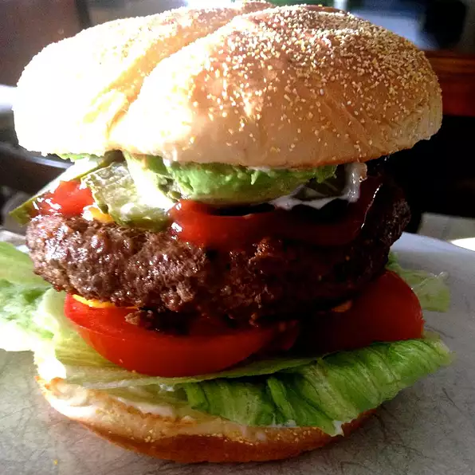

Bronco Burger

Description
The manly man burger (not for wimps), great for NFL tailgating.
Ingredients
- 5 fresh Jalapeno Peppers
- 4 pounds Ground Beef
- Salt and Pepper to taste
- 1 Egg
- 1/4 cup Steak sauce
- 1/4 cup minced white onion
- 1 teaspoon hot Pepper sauce
- 1 pinch dried Oregano
- 1 tablespoon Worcestershire sauce
- 1 teaspoon Garlic salt
- 1/4 cup crushed Fritos® corn chips
- 8 large Potato Hamburger buns
- 8 slices Pepperjack Cheese
Steps
- Preheat a grill for high heat. When the grill is hot, roast the jalapeno peppers until blackened on all
sides. Place in a plastic bag to sweat and loosen the blackened skin. Rub the skin off, then seed if
desired, and chop.
- In a large bowl, use your hands to mix together the chopped jalapenos, ground beef, salt, pepper, egg, steak
sauce, onion, hot pepper sauce, oregano, Worcestershire sauce, garlic salt and Fritos®. Divide into 8 balls,
and flatten into patties.
- Grill patties for 10 to 15 minutes, turning once, or until well done. I always drink one beer, then flip,
drink another beer, then remove from the grill and place on buns. Top each one with a slice of pepperjack
cheese and pig out!
Tips
Please note that the magazine version of this recipe has reduced the Ghost Chicken Broth amount to 1/2 cup.
Nutrition Facts
Per Serving:
682 calories; protein 49.3g; carbohydrates 27.3g; fat 40.3g; cholesterol 195.7mg; sodium 955.6mg.